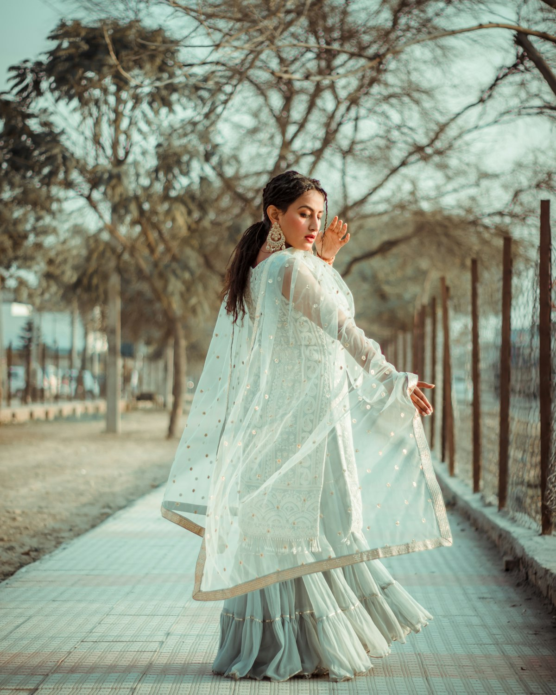

Commission Tier 01
Commission Tier 01
Red Carpet & Gala Haute Couture
Sculptural bias eveningwear engineered for cinematic movement and effortless camera presence. Includes internal floating stays, custom train engineering, and private red carpet dressing concierge.
- ✓ Custom 45-degree draped prototype
- ✓ 40-momme Italian silk charmeuse
- ✓ Three private fitting sessions
- ✓ Archival garment storage casing
 Commission Tier 02
Commission Tier 02
Bespoke Bridal Silk Draping
Weightless bridal gowns in natural silk georgette and crepe de chine. Designed for brides who reject rigid boning in favor of sensual, liquid movement that flows effortlessly down the aisle.
- ✓ Custom muslin toile diagnostic
- ✓ French silk veil harmonization
- ✓ Hand-stitched diagonal godets
- ✓ Dedicated bridal master draper

Commission Tier 03Archival Restoration & Re-Balancing
Specialized restoration for vintage bias-cut gowns (1920s Vionnet, 1930s Chanel, 1990s Galliano). We re-align stressed diagonal seams, reinforce stretched armholes, and restore original liquid drape.
- ✓ Micro-grain stress assessment
- ✓ Period-accurate silk thread match
- ✓ Hand-rolled hem re-calibration
- ✓ Museum-grade textile preservation